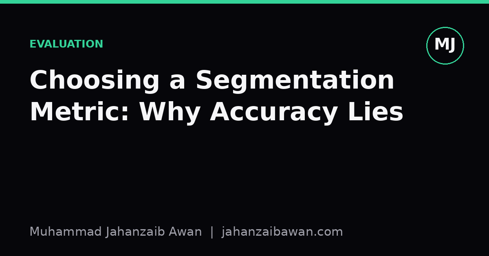

Choosing a Segmentation Metric: Why Accuracy Lies
Pixel accuracy can look flattering even when a model completely misses the object you care about. Here is how to pick a metric that actually reflects what matters.

The trap of pixel accuracy
Segmentation asks a model to label every pixel in an image, and the obvious way to score it is to count how many pixels got the right label. That is pixel accuracy, and it is almost always the wrong headline metric. The problem is class imbalance, which in segmentation is not an edge case but the default condition of the task.
Take a concrete example. Suppose you are segmenting a small tumour in a medical scan, and the tumour occupies roughly two percent of the image. A model that predicts 'background' for every single pixel, without looking at the image at all, scores ninety eight percent pixel accuracy. It has learned nothing, yet the number looks superb on a slide. Anyone skimming results tables without checking class balance will walk away thinking the model works.
This is not a hypothetical worry, it is the normal shape of segmentation data. Roads occupy a small fraction of aerial imagery, defects occupy a tiny fraction of an inspection photo, organs occupy a modest fraction of a whole scan. Whenever the foreground class is a minority, pixel accuracy rewards models for correctly ignoring it, which is exactly the failure mode you are trying to catch.
Intersection over Union and Dice: measuring overlap properly
The standard fix is to measure overlap between the predicted region and the ground truth region directly, rather than scoring every pixel independently. Intersection over Union, often called IoU or the Jaccard index, divides the area where prediction and ground truth agree by the area covered by either. If the predicted mask and the true mask overlap perfectly, IoU is one. If they do not overlap at all, IoU is zero, regardless of how much correct background surrounds them.
Go back to the tumour example. Suppose the true tumour region has one thousand pixels, and the model predicts a region of eight hundred pixels, of which six hundred fall inside the true tumour. The intersection is six hundred pixels. The union is one thousand plus eight hundred minus the six hundred counted twice, which is one thousand two hundred. IoU works out to six hundred divided by one thousand two hundred, exactly zero point five. That number tells you the prediction is a fairly rough approximation of the tumour, which matches what you would see if you looked at the image. Pixel accuracy on the same case would still be dragged up near ninety nine percent by all the correctly labelled background, telling you almost nothing useful.
The Dice coefficient, also called the F1 score in this context, is closely related and slightly more forgiving of size mismatches because it weights the intersection twice: two times intersection divided by the sum of the two areas. Using the same numbers, Dice is two times six hundred divided by one thousand eight hundred, which comes to zero point six seven. Dice and IoU always agree on ranking but differ slightly in magnitude, and Dice tends to be the convention in medical imaging while IoU is more common in general computer vision. Neither is objectively correct, but both are vastly more informative than pixel accuracy whenever the foreground is small.
It is worth reporting IoU or Dice per class and then averaging, known as mean IoU, rather than computing one global overlap score across all classes pooled together. Pooling lets large, easy classes such as background or sky swamp the contribution of small, hard classes such as pedestrians or lesions, quietly reintroducing the same imbalance problem you were trying to escape.
When overlap still is not enough
Even IoU and Dice have blind spots, and a rigorous evaluation should know what they miss. Both metrics treat the mask as a bag of pixels and are insensitive to where the errors occur. A model that gets the overall area roughly right but consistently blurs the boundary by a few pixels can score similarly to one that gets the interior right but misses a whole lobe of an irregularly shaped object. If the downstream task cares about precise boundaries, for instance estimating a tumour's margin for surgical planning, or measuring a crack's width for structural inspection, you need a boundary-aware metric.
The Hausdorff distance, or its more robust ninety fifth percentile variant, measures the worst-case distance between the predicted boundary and the true boundary rather than area overlap. It answers a different question: not 'how much do the regions overlap' but 'how far off is the boundary at its worst point'. A segmentation with excellent Dice can still have a poor Hausdorff distance if it misses a thin protrusion entirely, which is precisely the kind of error that area-based metrics under-penalise because a thin sliver contributes little to total area.
Another consideration is that small structures are punished harshly by IoU in a way that can be misleading. If the true object is only twenty pixels across, being off by two pixels along the boundary can drop IoU substantially, even though the same absolute error on a two hundred pixel object barely moves the score. This means comparing IoU across objects of very different sizes, or across datasets with different typical object sizes, needs care, and reporting a size-stratified breakdown is often more honest than a single aggregate number.
Choosing the metric to fit the decision
The practical lesson is to work backwards from the decision the segmentation output will feed into, rather than defaulting to whatever metric appears most often in a benchmark leaderboard. If the output feeds an area-based measurement, such as estimating burn wound surface area, overlap metrics like Dice are the right primary measure. If the output feeds a boundary-critical decision, such as clearance for autonomous navigation, boundary distance metrics deserve equal billing.
I would also always report class-wise breakdowns alongside the aggregate, and always check the class balance of the evaluation set before trusting a single summary number. A mean IoU of eighty percent can hide a model that scores ninety five on the easy majority class and thirty on the rare class that actually mattered for the application. Segmentation, more than most tasks, punishes anyone who reports one convenient number and calls it a day.